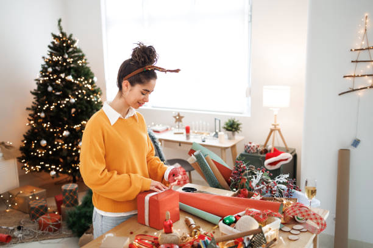

Hobbies are a wonderful way to express creativity and enjoy life outside of work. Here are some of my favorite hobbies.

Decorating home for christmass
- Decorating My House:I find joy in creating a beautiful living space through home decoration.
I love experimenting with different styles, colors, and arrangements to make my home a reflection
of my personality. Whether it's rearranging furniture, adding decorative items, or choosing the
right lighting, I enjoy the process of transforming a space into a warm and inviting environment.
This hobby allows me to express my creativity while also providing a sense of comfort and
tranquility in my daily life.